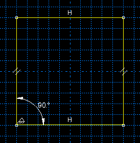

Investigating the skew sensitivity of shell elements#
In this example you will use Abaqus/CAE to create the model and store the model in a model database. The script opens the model database and performs a parametric study on the model. The example illustrates how you can use a combination of Abaqus/CAE and the Abaqus Scripting Interface to analyze a problem.
Creating the model to analyze#
This example uses Abaqus Scripting Interface commands to evaluate the sensitivity of the shell elements in Abaqus to skew distortion when they are used as thin plates. Further details can be found in Skew sensitivity of shell elements.
The problem investigates the effects on the accuracy of the bending moment computed at the center of a shell using:
different shell formulations and
at different angles.
Figure 1 illustrates the basic geometry of the simply supported skew plate with a uniform distributed load.
The plate is loaded by a uniform pressure of \(1\times10^{-6}\) MPa applied over the entire surface. The edges of the plate are all simply supported. The analysis is performed for five different values of the skew angle, \(\delta\): 90°, 80°, 60°, 40°, and 30°. The analysis is performed for two different quadrilateral elements: S4 and S8R.
The example is divided into two scripts. The controlling script, skewExample.py, imports skewExampleUtils.py. Use the fetch utility to retrieve the scripts:
abaqus fetch job=skewExample
abaqus fetch job=skewExampleUtils
You should use Abaqus/CAE to create your model and to save the resulting model database. You will then use scripting to parameterize your model, submit an analysis job, and operate on the results generated.
Start Abaqus/CAE, and create a model database from the Start Session dialog box. By default, you are operating on a model named Model-1. The model should include the following:
Part
Create a three-dimensional planar shell part, and name it Plate. Use an approximate size of 5.0. Sketch a square where all sides are 1.0 m long, with the lower-left vertex at (0, 0, 0). Delete all perpendicular and vertical constraints, and apply the following:fixed constraints to the lower-left and lower-right vertices,horizontal constraints to the top and bottom edges (if they are not already defined),parallel constraints to the left and right edges, andan angle dimension to the lower-left vertex (90°).
Material
Create a material, and name it Steel. The Young’s modulus is 30 MPa, and the Poisson’s ratio is 0.3.
Section
Create a homogeneous shell section that refers to the material called Steel. Name the section Shell. The plate thickness is 0.01 m. The length/thickness ratio is, thus, 100/1 so that the plate is thin in the sense that transverse shear deformation should not be significant. Assign the section to the plate.
Assembly
Create the assembly using a single, independent part instance of Plate. Abaqus/CAE names the part instance Plate-1. Creating an independent part instance means that the mesh is based at the assembly level.
Step
Create a static step and name it Step-1. Enter Apply pressure for the step Description. Accept the default time period of 1.0 and the default initial increment of 1.0.
Output database requests
Edit the default output database request for field output and select only U, Translations and rotations. Create a second field output request for SF, Section forces and moments, and specify Nodes as the element output position. Both field output requests should be for the whole model after every increment. Delete all requests for history output.
Boundary condition
Create a displacement boundary condition, and name it Pinned. The boundary condition pins the exterior edges of the plate.
Load
Create a pressure load, and name it Pressure. Apply the load to the face of the plate. Accept the default side of the plate and use a magnitude of 1.0. This positive pressure will result in a negative displacement in the 3-direction.
Set
Partition the plate into quarters by sketching lines between the midpoints of the four edges. Create a set that contains the vertex at the center of the plate, and name the set CENTER.
Mesh
Create a 4 × 4 mesh of quadrilateral elements on the plate.
Job
Create a job, and name it skew. The job must refer to the model Model-1.
If you want, you can complete the above steps for creating the model using a function in skewExampleUtils.py. In the command line interface area of Abaqus/CAE, type the following commands:
import skewExampleUtils
skewExampleUtils.createModel()
When you execute the function, a new database is created, so you should save your work first.
Finally, save the database as skew.cae.
Changing the skew angle#
The parameterized script changes the skew angle of the plate and computes the maximum bending moment at the center for two different element types. The script changes the skew angle by modifying an angular dimension and selecting the vertices to move. You need to add the angular dimension and determine the indices of the dimension to modify and the vertices to move.
The parameterized script changes the skew angle of the plate and computes the maximum bending moment at the center for two different element types. The script changes the skew angle by modifying an angular dimension and selecting the vertices to move. You need to add the angular dimension and determine the indices of the dimension to modify and the vertices to move.
Add the angular dimension#
Return to the Part module.
From the main menu bar, select Feature -> Edit and select the plate to edit.
From the Edit Feature dialog box, select Edit Section Sketch.
From the Sketcher toolbox, select the dimension tool and dimension the angle at the lower left corner of the plate as shown in Figure 1.
{kind=link}

Figure 1. Dimension the angle at the lower left corner of the plate.#
Determine the indices of the dimension to modify and the vertices to move#
From the Sketcher toolbox, select the edit dimension tool.
Select the lower left angular dimension.
Enter a dimension of 60, and click OK.
Exit the Sketcher tools, and exit the Sketcher.
From the Edit Feature dialog box, select OK.
Examine the replay file, abaqus.rpy. The last few lines of the replay file will contain the statements that modified the angular dimension. The statement will look similar to the following:
d[0].setValues(value=60.0, )
The example script, skewExample.py, contains a similar statement that modifies the angular dimension of the plate. The index of the angular dimension in your model must be the same as the index in the example script. If the indices are not the same, you must edit the example script and enter the correct indices.
d[0].setValues(value=angle, )
Save the model database, and name it skew. Abaqus/CAE saves the model database in a file called skew.cae. The example script opens this model database and parameterizes the model it contains.
Using a script to perform a parametric study#
he following shows the contents of the script skewExample.py. The parametric study does the following:
Opens the model database and creates variables that refer to the part, the assembly, and the part instance stored in Model-1.
Creates variables that refer to the four faces and the nine vertices in the instance of the planar shell part.
Skews the plate by modifying the angular dimension in the sketch of the base feature.
Defines the logical corners of the four faces, and generates a structured mesh.
Runs the analysis for a range of angles using two element types for each angle.
Calculates the maximum moment and displacement at the center of the shell.
Displays X - Y plots in separate viewports of the following:
Displacement versus skew angle
Maximum bending moment versus skew angle
Minimum bending moment versus skew angle
The theoretical results are also plotted.
"""
skewExample.py
This script performs a parameter study of element type versus
skew angle. For more details, see Problem 2.3.4 in the
Abaqus Benchmarks manual.
Before executing this script you must fetch the appropriate
files: abaqus fetch job=skewExample
abaqus fetch job=skewExampleUtils.py
"""
import part
import mesh
from mesh import S4, S8R, STANDARD, STRUCTURED
import job
from skewExampleUtils import getResults, createXYPlot
# Create a list of angle parameters and a list of
# element type parameters.
angles = [90, 80, 60, 40, 30]
elemTypeCodes = [S4, S8R]
# Open the model database.
openMdb('skew.cae')
model = mdb.models['Model-1']
part = model.parts['Plate']
feature = part.features['Shell planar-1']
assembly = model.rootAssembly
instance = assembly.instances['Plate-1']
job = mdb.jobs['skew']
allFaces = instance.faces
regions =(allFaces[0], allFaces[1], allFaces[2], allFaces[3])
assembly.setMeshControls(regions=regions,
technique=STRUCTURED)
face1 = allFaces.findAt((0.,0.,0.), )
face2 = allFaces.findAt((0.,1.,0.), )
face3 = allFaces.findAt((1.,1.,0.), )
face4 = allFaces.findAt((1.,0.,0.), )
allVertices = instance.vertices
v1 = allVertices.findAt((0.,0.,0.), )
v2 = allVertices.findAt((0.,.5,0.), )
v3 = allVertices.findAt((0.,1.,0.), )
v4 = allVertices.findAt((.5,1.,0.), )
v5 = allVertices.findAt((1.,1.,0.), )
v6 = allVertices.findAt((1.,.5,0.), )
v7 = allVertices.findAt((1.,0.,0.), )
v8 = allVertices.findAt((.5,0.,0.), )
v9 = allVertices.findAt((.5,.5,0.), )
# Create a copy of the feature sketch to modify.
tmpSketch = model.ConstrainedSketch('tmp', feature.sketch)
v, d = tmpSketch.vertices, tmpSketch.dimensions
# Create some dictionaries to hold results. Seed the
# dictionaries with the theoretical results.
dispData, maxMomentData, minMomentData = {}, {}, {}
dispData['Theoretical'] = ((90, -.001478), (80, -.001409),
(60, -0.000932), (40, -0.000349), (30, -0.000148))
maxMomentData['Theoretical'] = ((90, 0.0479), (80, 0.0486),
(60, 0.0425), (40, 0.0281), (30, 0.0191))
minMomentData['Theoretical'] = ((90, 0.0479), (80, 0.0448),
(60, 0.0333), (40, 0.0180), (30, 0.0108))
# Loop over the parameters to perform the parameter study.
for elemCode in elemTypeCodes:
# Convert the element type codes to strings.
elemName = repr(elemCode)
dispData[elemName], maxMomentData[elemName], \
minMomentData[elemName] = [], [], []
# Set the element type.
elemType = mesh.ElemType(elemCode=elemCode,
elemLibrary=STANDARD)
assembly.setElementType(regions=(instance.faces,),
elemTypes=(elemType,))
for angle in angles:
# Skew the geometry and regenerate the mesh.
assembly.deleteMesh(regions=(instance,))
d[0].setValues(value=angle, )
feature.setValues(sketch=tmpSketch)
part.regenerate()
assembly.regenerate()
assembly.setLogicalCorners(
region=face1, corners=(v1,v2,v9,v8))
assembly.setLogicalCorners(
region=face2, corners=(v2,v3,v4,v9))
assembly.setLogicalCorners(
region=face3, corners=(v9,v4,v5,v6))
assembly.setLogicalCorners(
region=face4, corners=(v8,v9,v6,v7))
assembly.generateMesh(regions=(instance,))
# Run the job, then process the results.
job.submit()
job.waitForCompletion()
print 'Completed job for %s at %s degrees' % (elemName,
angle)
disp, maxMoment, minMoment = getResults()
dispData[elemName].append((angle, disp))
maxMomentData[elemName].append((angle, maxMoment))
minMomentData[elemName].append((angle, minMoment))
# Plot the results.
createXYPlot((10,10), 'Skew 1', 'Displacement - 4x4 Mesh',
dispData)
createXYPlot((160,10), 'Skew 2', 'Max Moment - 4x4 Mesh',
maxMomentData)
createXYPlot((310,10), 'Skew 3', 'Min Moment - 4x4 Mesh',
minMomentData)
The script imports two functions from skewExampleUtils. The functions do the following:
Retrieve the displacement and calculate the maximum bending moment at the center of the plate.
Display curves of theoretical and computed results in a new viewport.
"""
skewExampleUtils.py
Utilities for the scripting tutorial Skew Example.
"""
from abaqus import *
from abaqusConstants import *
import visualization
#~~~~~~~~~~~~~~~~~~~~~~~~~~~~~~~~~~~~~~~~~~~~~~~~~~~~~~~~~~~~
def getResults():
"""
Retrieve the displacement and calculate the minimum
and maximum bending moment at the center of plate.
"""
from visualization import ELEMENT_NODAL
# Open the output database.
odb = visualization.openOdb('skew.odb')
centerNSet = odb.rootAssembly.nodeSets['CENTER']
frame = odb.steps['Step-1'].frames[-1]
# Retrieve Z-displacement at the center of the plate.
dispField = frame.fieldOutputs['U']
dispSubField = dispField.getSubset(region=centerNSet)
disp = dispSubField.values[0].data[2]
# Average the contribution from each element to the moment,
# then calculate the minimum and maximum bending moment at
# the center of the plate using Mohr's circle.
momentField = frame.fieldOutputs['SM']
momentSubField = momentField.getSubset(region=centerNSet,
position=ELEMENT_NODAL)
m1, m2, m3 = 0, 0, 0
for value in momentSubField.values:
m1 = m1 + value.data[0]
m2 = m2 + value.data[1]
m3 = m3 + value.data[2]
numElements = len(momentSubField.values)
m1 = m1 / numElements
m2 = m2 / numElements
m3 = m3 / numElements
momentA = 0.5 * (abs(m1) + abs(m2))
momentB = sqrt(0.25 * (m1 - m2)**2 + m3**2)
maxMoment = momentA + momentB
minMoment = momentA - momentB
odb.close()
return disp, maxMoment, minMoment
#~~~~~~~~~~~~~~~~~~~~~~~~~~~~~~~~~~~~~~~~~~~~~~~~~~~~~~~~~~~
def createXYPlot(vpOrigin, vpName, plotName, data):
"""
Display curves of theoretical and computed results in
a new viewport.
"""
from visualization import USER_DEFINED
vp = session.Viewport(name=vpName, origin=vpOrigin,
width=150, height=100)
xyPlot = session.XYPlot(plotName)
chart = xyPlot.charts.values()[0]
curveList = []
for elemName, xyValues in sorted(data.items()):
xyData = session.XYData(elemName, xyValues)
curve = session.Curve(xyData)
curveList.append(curve)
chart.setValues(curvesToPlot=curveList)
chart.axes1[0].axisData.setValues(useSystemTitle=False,title='Skew Angle')
chart.axes2[0].axisData.setValues(useSystemTitle=False,title=plotName)
vp.setValues(displayedObject=xyPlot)
#~~~~~~~~~~~~~~~~~~~~~~~~~~~~~~~~~~~~~~~~~~~~~~~~~~~~~~~~~~~~
def createModel():
"""
Create the skew example model, including material, step, load, bc, and job.
"""
import regionToolset, part, step, mesh
# Create the Plate
m = mdb.models['Model-1']
s = m.ConstrainedSketch(name='__profile__', sheetSize=5.0)
g, v, d, c = s.geometry, s.vertices, s.dimensions, s.constraints
s.sketchOptions.setValues(sheetSize=5.0, gridSpacing=0.1, grid=ON,
gridFrequency=2, constructionGeometry=ON,
dimensionTextHeight=0.1, decimalPlaces=2)
s.setPrimaryObject(option=STANDALONE)
s.rectangle(point1=(0.0, 0.0), point2=(1.0, 1.0))
s.delete(objectList=(c[21], c[18], c[19], c[20]))
s.HorizontalConstraint(entity=g.findAt((0.5, 0.0)))
s.FixedConstraint(entity=v.findAt((0.0, 0.0)))
s.FixedConstraint(entity=v.findAt((1.0, 0.0)))
s.ParallelConstraint(entity1=g.findAt((0.0, 0.5)),
entity2=g.findAt((1.0,0.5)))
s.AngularDimension(line1=g.findAt((0.0, 0.5)), line2=g.findAt((0.5, 0.0)),
textPoint=(0.2, 0.2), value=90.0)
p = m.Part(name='Plate', dimensionality=THREE_D, type=DEFORMABLE_BODY)
p.BaseShell(sketch=s)
s.unsetPrimaryObject()
vp = session.viewports['Viewport: 1']
vp.setValues(displayedObject=p)
del mdb.models['Model-1'].sketches['__profile__']
# Create the Steel material
m.Material('Steel')
m.materials['Steel'].Elastic(table=((30.e6, 0.3), ))
m.HomogeneousShellSection(name='Shell', preIntegrate=OFF, material='Steel',
thickness=0.01, poissonDefinition=DEFAULT,
temperature=GRADIENT, integrationRule=SIMPSON, numIntPts=5)
# Assign Steel to the plate
p = mdb.models['Model-1'].parts['Plate']
region =(None, None, p.faces, None)
p.SectionAssignment(region=region, sectionName='Shell')
# Create the assembly
a = m.rootAssembly
vp.setValues(displayedObject=a)
a.DatumCsysByDefault(CARTESIAN)
a.Instance(name='Plate-1', part=p, dependent=OFF)
pi = a.instances['Plate-1']
# Create the step
m.StaticStep(name='Step-1', previous='Initial',
description='Apply pressure', timePeriod=1, initialInc=1)
vp.assemblyDisplay.setValues(step='Step-1')
m.fieldOutputRequests['F-Output-1'].setValues(frequency=1, variables=('U',))
m.FieldOutputRequest(name='F-Output-2', createStepName='Step-1',
variables=('SF',), position=NODES)
del mdb.models['Model-1'].historyOutputRequests['H-Output-1']
# Create the displacement BC
e = pi.edges
edges = e.findAt(((0.25, 0.0, 0.0), ), ((1.0, 0.25, 0.0), ),
((0.75, 1.0, 0.0), ), ((0.0, 0.75, 0.0), ), )
region =(None, edges, None, None)
m.DisplacementBC(name='Pinned', createStepName='Step-1', region=region,
u1=0.0, u2=0.0, u3=0.0)
# Create the Pressure load
s1 = pi.faces
side1Faces1 = s1.findAt(((0.333333333333333, 0.333333333333333, 0.0),
(0.0, 0.0, 1.0), ),)
region = regionToolset.Region(side1Faces=side1Faces1)
m.Pressure(name='Load-1', createStepName='Step-1', region=region,
distributionType=UNIFORM, magnitude=1.0, amplitude=UNSET)
# Partition the face
f1, e1 = pi.faces, pi.edges
faces = (f1.findAt(coordinates=(0.33333333333, 0.33333333333, 0.0)), )
pt1 = pi.InterestingPoint(edge=e1.findAt(coordinates=(
0.0, 0.75, 0.0)), rule=MIDDLE)
pt2 = pi.InterestingPoint(edge=e1.findAt(coordinates=(
1.0, 0.25, 0.0)), rule=MIDDLE)
a.PartitionFaceByShortestPath(faces=faces, point1=pt1, point2=pt2)
faces = (f1.findAt(coordinates=(0.33333333333, 0.66666666667, 0.0)),
f1.findAt(coordinates=(0.66666666667, 0.33333333333, 0.0)))
pt1 = pi.InterestingPoint(edge=e1.findAt(coordinates=(
0.75, 1.0, 0.0)), rule=MIDDLE)
pt2 = pi.InterestingPoint(edge=e1.findAt(coordinates=(
0.25, 0.0, 0.0)), rule=MIDDLE)
a.PartitionFaceByShortestPath(faces=faces, point1=pt1, point2=pt2)
# Create the Geometry set CENTER
verts = pi.vertices.findAt(((0.5, 0.5, 0.0), ))
a.Set(name='CENTER', vertices=verts)
# Create the mesh
a.seedPartInstance(regions=(pi,), size=0.25)
a.generateMesh(regions=(pi,))
# Create the job
mdb.Job(name='skew', model='Model-1', type=ANALYSIS, explicitPrecision=SINGLE,
description='', userSubroutine='', numCpus=1, scratch='',
echoPrint=OFF, modelPrint=OFF, contactPrint=OFF, historyPrint=OFF)